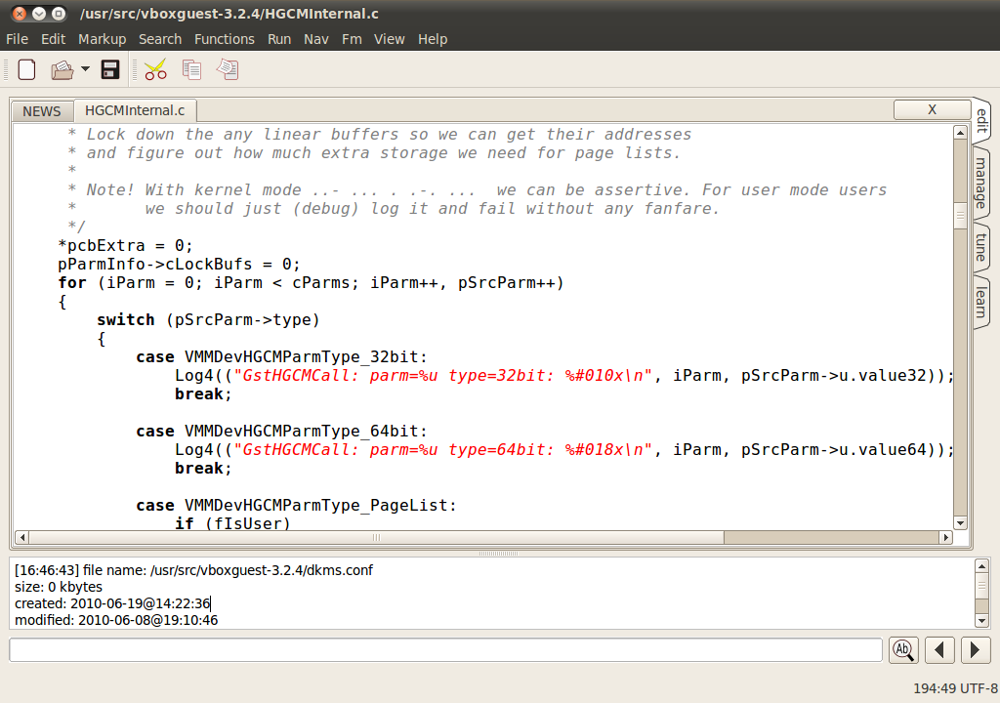
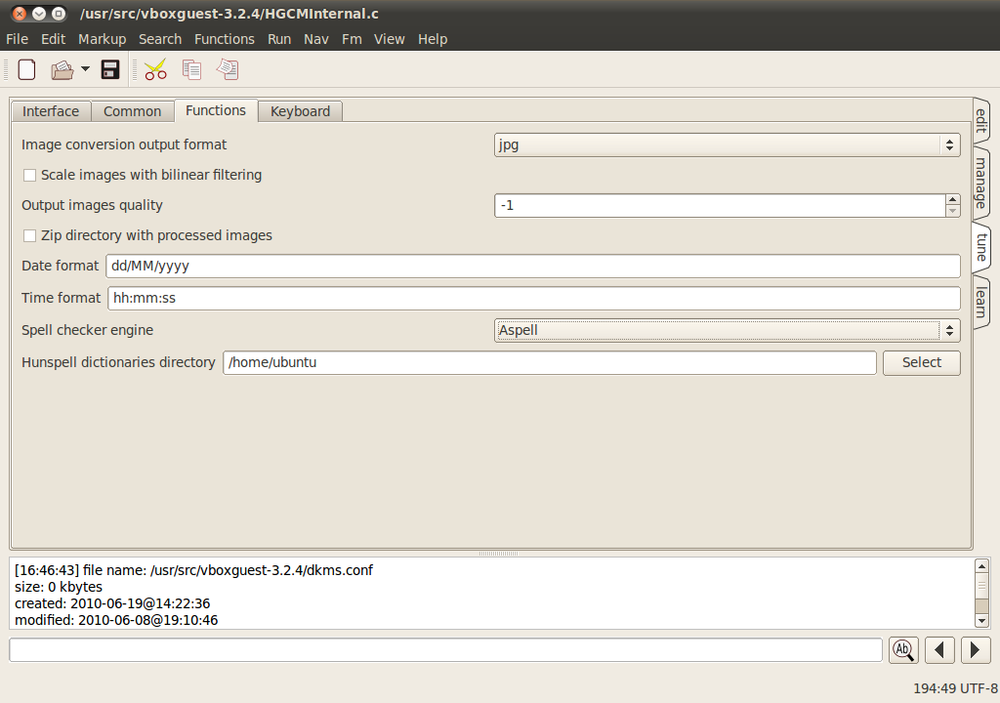
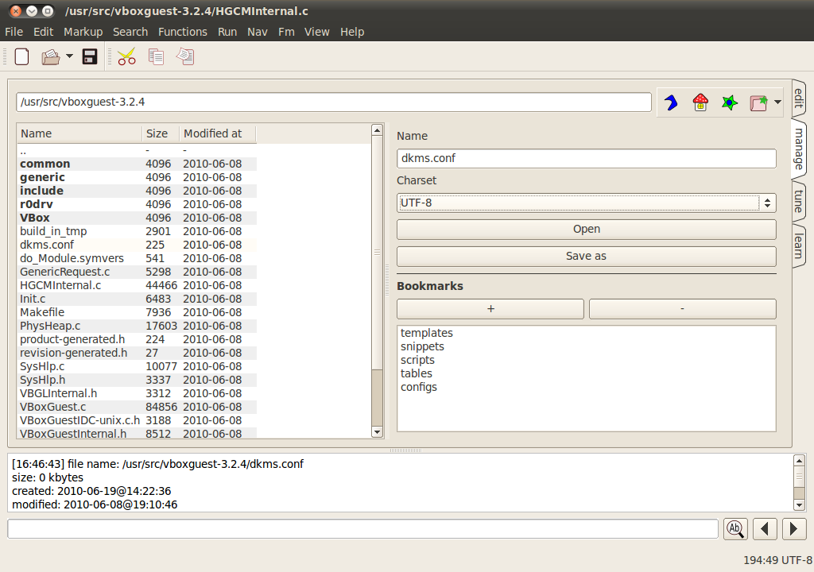
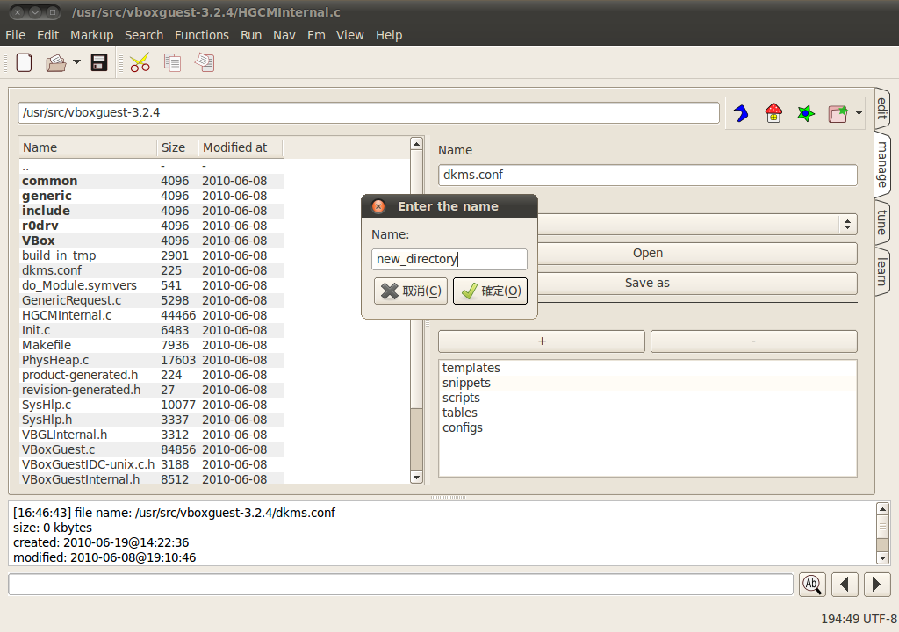

跨平台的文字編輯器 - TEA

官方網站：https://tea-editor.sourceforge.net/
下載網址：https://ncu.dl.sourceforge.net/project/tea-editor/tea-editor/28.0.0/tea-28.0.0.tar.bz2 (222KB)
註：Ubuntu 可直接使用 APT/YUM 進行安裝，指令為 sudo apt-get install tea。
簡介
每個人在使用電腦上的軟體時，多半都會有一些個人的習慣。以 Shell 為例，有人喜歡 bash，也有人非使用 tcsh 不可。文字編輯器也是一樣，純文字介面的 vi、joe、pico，或是 emacs 都有不少的支持者，圖形介面的 gedit 則是大多數 GNOME 桌面環境的使用者，在圖形環境下進行文書編輯時的第一選擇。
許多 UNIX 或 Linux 的相關書籍，都會建議初學者直接使用 vi 這套著名的文字編輯器，甚至建議即使在圖形作業環境下，也採用開啟終端機再執行 vi 的方式進行文字編輯的相關工作。vi 以其操作介面難以上手而聞名，許多人學了大半天，還是無法理解或是記憶相關的操作指令。雖然 vi 被視為學習 UNIX 或 Linux 系統時一定要學會的文字編輯器之一，功能也有其獨到之處，但在圖形操作介面已經相當成熟的今天，並不一定非要學習 vi 不可。因為有許多圖形介面的文字編輯器不但可以做到與 vi 相同的功能，甚至提供更多。本文所要介紹的 TEA 編輯器，便是最好的一個例子。TEA 本身雖然是在 Linux 平台上進行開發，但也提供 Windows 版本，屬於跨平台的文字編輯器之一。

▲ TEA 的執行畫面
TEA 的功能與特色
目前 TEA 的最新版本為 28.0.0，本身是使用 Qt 4.4 開發而成。先前 TEA 曾經推出使用 GTK+ 2.4 所開發的 TEA-GTK 版本，但目前 GTK 版本只發行至 17.6.6 版，暫時沒有開發新版本的計畫，所以建議在系統中安裝 Qt，並直接使用 TEA Qt 版本。
由於 TEA 本身是一套純文字檔案的文書編輯器，因此在檔案編輯完成準備進行存檔時，自然只有純文字的格式可以選擇。有趣的是，TEA 雖然只能儲存為純文字格式，但在可以讀取的檔案格式當中，卻可以支援許多文書處理軟體所產生的檔案格式。其中包括 OpenOffice.org 主要使用的開放文件格式（Open Document Text）、先前舊版本的 OpenOffice.org 所使用的 SWX 格式、KWord 所使用的 KWD 格式、Abiword 本身所使用的檔案格式，或是 Windows 系統上常見的 Rich Text Format (RTF) 等等。這樣的功能可以讓使用者直接利用 TEA 讀取原先以其他特定格式所儲存的文書檔案，並轉換格式儲存為更具可攜性的純文字格式。如果需要進行文書檔案的格式轉換，相當適合使用 TEA 進行相關的工作。
許多應用程式所佔用的磁碟空間都相當龐大，雖然目前硬碟的取得成本相當低廉，但一套軟體動輒數十甚至數百 MB 的執行檔與相關的程式庫檔案，累積下來所佔用的硬碟空間還是相當驚人。一般而言圖形介面的軟體通常會給人一種龐然大物的印象，但 TEA 卻扭轉了這樣的定見。以原始碼而言，222KB 的大小或許無法代表任何意義，但如果連結至 TEA 的下載網址，便會發現 Linux 版本的 ELF 格式執行檔，在解壓縮後其大小僅有 1.1MB 左右。通常體積較小的程式，在功能上可能較為陽春，所以程式碼不大。但以 TEA 所提供的功能來看，體積較小的結果，很可能是因為程式本身在設計時有經過一定程度的最佳化，才能精簡到這樣的程度。
目前大多數的編輯軟體，為了提供同時編輯多個檔案的功能，都會採用頁籤方式作為操作介面，也就是將每一個正在編輯中的檔案，使用不同的頁籤作為區隔。TEA 也不例外，本身支援同一時間編輯一個以上的檔案，亦採用頁籤的編排設計方式，讓使用者可以立即得知目前正在編輯的檔案為何，並可快速切換與檢視其他已開啟的檔案。由於頁籤的設計與畫面編排方式在使用上非常方便，因此 TEA 除了在顯示目前已開啟檔案時會使用頁籤觀念以外，一些常用功能也會以頁籤方式進行整合，並顯示在畫面右方。例如點選「manage」即可進入檔案管理功能以進行檔案處理的相關工作；「tune」可以直接進入設定畫面，並決定 TEA 在操作介面上的各種設定。「learn」則是 TEA 本身所提供的線上說明文件，如果在操作時對於 TEA 的各種功能有不清楚的地方，可以直接進入此畫面查詢線上說明文件。如果要返回編輯畫面，點選「edit」頁籤即可。

▲ TEA 在畫面上方與右方都採用頁籤方式作為操作介面
使用文字編輯器的場合相當多，除了進行純文字文件的編輯工作以外，在進行程式開發相關的工作時，也有許多人會直接使用一般的文字編輯器，而非使用整合開發環境所內建的編輯器。與目前大多數的編輯器相同，TEA 會自動判斷目前所編輯的檔案內容是否為程式原始碼，並套用適合的文法標示功能，以不同的顏色或是字型顯示程式中的關鍵字，或是區別字串、數值等不同的資料型態。目前 TEA 的文法標示功能除了主要的 C/C++ 語言以外，另外還支援 Basic、C#、Fortran、Java、NASM、Pascal、Perl、PHP、Verilog、XML、HTML，以及 XHTML 等各種不同的程式語言。此外，像一般的 Shell Script（目前僅支援 Bash 的 Shell Script），或是 TeX/LaTex 的文件，以及主要作為語系翻譯功能使用的 gettext PO 檔，TEA 也支援相關格式的文法標示功能，在處理檔案時會對使用者有相當程度的幫助。但較為可惜的是，TEA 目前尚未支援程式碼折疊與尋找配對括號的功能，這二項功能如果可以在未來的版本之中加入，相信會有更多程式設計師採用 TEA 作為編輯程式原始碼時的主要工具。
由於編輯 HTML 網頁原始檔時，可能需要經常使用特定的 HTML 標籤，因此 TEA 特地將 HTML 常用的標籤整合至 Markup 選單中，並指定熱鍵至一部份標籤之中，例如文字所採用的標題大小、是否置中、插入連結等功能都是 TEA 整合至 Markup 選單中，並經常會使用到的 HTML 標籤。如果 HTML 檔案編輯到一個程度，希望先行檢視該檔案的顯示結果時，則可以利用 TEA 的使用外部瀏覽器預覽功能進行處理。使用時從「View」選單中執行「Preview with default browser」，即可使用預設的瀏覽器檢視檔案的編輯成果。
此外，由於目前檔案編碼的格式相當混亂，在處理不同語言所建立的文件時更容易遭遇相關的問題，因此文字編輯器是否可以正確處理不同編碼所產生的文件，也成了相當重要的功能之一。TEA 在開啟文件時，會自動判斷文件所使用的編碼格式為何，並自動以該種編碼進行解讀與顯示。如果 TEA 的判斷不正確，使用者亦可在開啟檔案時直接指定所要使用的編碼格式，如此一來便可避免因為編碼格式不正確，而無法在畫面中顯示正確文字的情況發生。

▲ 使用者可以在開啟檔案時，直接指定檔案的編碼格式，或是交給 TEA 自動進行判斷。
除了文字編碼問題以外，文法檢查功能也是文字編輯器相當重要的功能之一。為了避免發送出去的文件有太多拼字上的錯誤，TEA 可以呼叫 aspell 或是 Hunspell 等工具程式進行文章內容的拼字檢查，並告知使用者是否有拼字錯誤的問題存在。由於目前僅支援 aspell 與 Hunspell，如果要檢查拼字是否正確，但該文件所使用的語言並不是這二套工具程式所支援的語系，則拼字檢查功能將無法使用。
TEA 另外還內建了一個檔案管理功能，可以進行一些基本的檔案操作，例如建立新目錄、更改檔名、刪除檔案等等。此外，也可以利用此功能進行檔案檢查碼的計算，目前支援 MD4、MD5 與 SHA1 三種雜湊演算法。在需要進行檔案檢查碼的比對時，先在檔案管理畫面選擇欲計算的檔案，再從「Fm」選單中點選「File information」->「MD5 checksum」（或是「MD4 checksum」、「SHA1 checksum」），即可在畫面下方的訊息視窗中得知此檔案的檢查碼為何。如果需要進行檔案的壓縮，亦可從「Fm」的「ZIP」選單中進行處理，包括建立新的ZIP壓縮檔、將檔案加入已存在的ZIP檔等功能都有支援。TEA 的檔案管理功能也支援書籤功能，可以將常用的目錄加入到檔案管理功能之中的書籤，將來在需要開啟此目錄之中的檔案時，即可進入檔案管理功能，並直接從書籤選取該路徑的項目，即可立即將檔案管理員的工作目錄切換至該目錄之中。

▲ TEA 內建檔案管理功能，可以進行基本的檔案處理工作。
TEA 在字串處理方面也有相當良好的功能支援，無論是排序字串、反轉字串，或是去除字串前後的空白字元等相關的字串處理作業，都能在 TEA 之中直接完成。使用時直接在檔案中標示要處理的字串，再從「Functions」選單中選取「Text」分類，並點選欲使用的字串處理功能即可。TEA 另外還提供了摩斯密碼轉譯功能，可以直接將英文或俄文轉成摩斯密碼，或是將摩斯密碼轉成英文或俄文。雖然這並不是相當常用的功能，但在需要進行摩斯密碼的編碼或解碼時，亦可利用 TEA 進行轉換。
除了文字編輯的相關功能之外，TEA 本身也是一個小型的圖片瀏覽器與圖片轉換工具。TEA 可以支援一些常見的圖形檔格式，並直接在 TEA 的介面中進行瀏覽與格式轉換，亦可利用 TEA 進行圖片的縮放功能。目前 TEA 支援的圖片格式包括 PNG、JPEG、GIF、BMP、SVG、TIFF 與 TGA 等格式，已經包含了大多數人經常會使用的圖片檔案格式。圖片瀏覽與處理的相關功能方面，TEA 自然無法與其他專為圖形處理所設計的軟體一較高下。但如果只是需要基本的圖片檢視與處理功能，TEA 也相當適合處理相關的作業。
結語
文字編輯器常給人功能相當陽春的感覺，但這樣的工具程式卻是不可或許的工具之一，也因此有許多人認為非要學會 vi，才能在 UNIX/Linux 的操作上發揮更大的功效。但事實證明，只要選對了工具，UNIX/Linux 的使用者並不一定要選用 vi 不可。圖形介面的文字編輯器也有許多好工具可以使用，TEA 便是其中一個絕佳的例子。